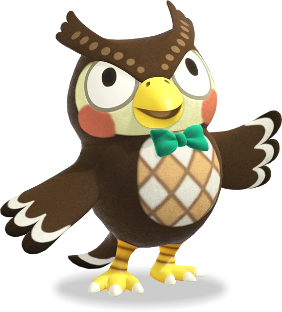
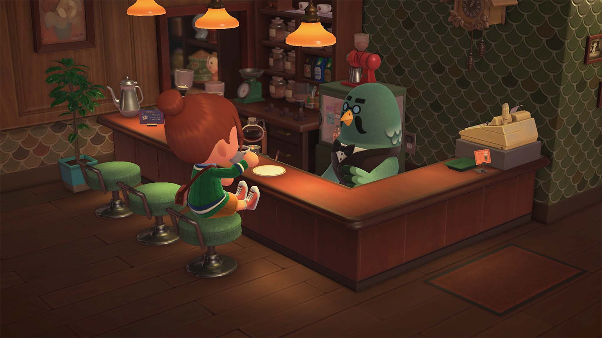

Live life at your own pace as you garden, fish, decorate, hunt
for bugs and fossils, get to know the animal residents, and more.
The time of day and seasons match real life, so something is happening
on your island whether youre there or not.
Catch of the day
Catching insects, diving for sea creatures, and fishing for—well, fish—are popular activities
on your island. You can find different critters depending on the season
and time of day. Each newly discovered creature is automatically added to your in-game Critterpedia.
Where am I going to put all the things I collect?
Please do consider donating them to the museum! Blathers will accept
new species of bugs and fish and analyze any fossils you dig up.
I am exeedingly interested in the ecosystem of this island!


Grab a fresh brew at the Roost**
Brewster is always on hand to serve up coffee and conversation at the Roost café. Sit at the counter and order a drink—or take it to go!
Use the amiibo™ phone inside the café to invite other characters to join you by using compatible amiibo cards and figures (sold separately).
You can even invite friends to your island and bring them to the Roost to enjoy coffee time together.
Give your island a personal touch
Customize your community at your own pace
with greenery, furniture, and decorative items you can place
anywhere you want—inside and outside! You can use what you craft
at Tom Nooks workbench to decorate your island paradise.
flower power
Planting flowers makes your island more beautiful, so...grow wild!water your
garden plot until your plants bloom, harvest or crosspolinate them, you may grow a rare color
Decorate your hair with a garland of your favorite flowers. Don't worry—they'll grow back!